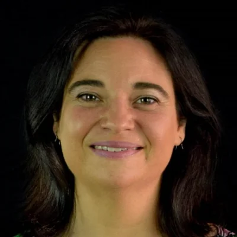
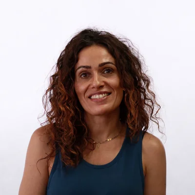
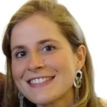
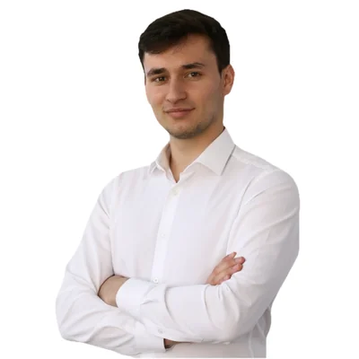
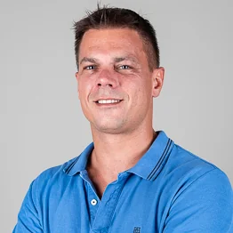
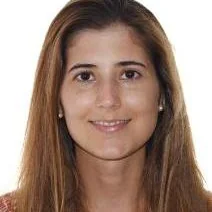
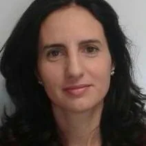

Members
These are the people of the ROGLE group, from the Departamento de Organización de Empresas of the Universitat Politècnica de València. Each person has a profile with their publications and projects in the group. The links of each person are only those that they have made public. Some profiles are under construction.
Carlos Andrés Romano
Full Professor
Departamento de Organización de Empresas
Research interests: Cellular Manufacturing, Work Study, Production Scheduling and Sequencing, Combinatorial Optimization
View profile141 publications, 44 projects
View profile315 publications, 28 projectsRosa Esteban Amaro
Professor and Researcher
Departamento de Organización de Empresas
Research interests: Operations Management, Artificial Intelligence and digital transformation, circular economy, sustainable operations, eco-innovation

View profile10 publications, 0 projectsSofia García Manglano
Departamento de Organización de Empresas

View profile14 publications, 0 projectsJosé P. Garcia-Sabater
Full Professor (Operations Management)
Departamento de Organización de Empresas
Research interests: supply chain management, operations management, management science
View profile275 publications, 73 projectsJulio J. García-Sabater
Associate Professor
Departamento de Organización de Empresas
Research interests: process improvement and lean production; adapting operations management tools in work environments with people with intellectual disabilities
View profile169 publications, 32 projectsArnau Igualde Saez
PhD Student and Substitute Lecturer
Departamento de Organización de Empresas
Research interests: university resource planning, machine learning, academic trajectories, student dropout prediction

View profile7 publications, 0 projectsAlberto Lacort
PhD Student
Departamento de Organización de Empresas
Research interests: hospital bed management, patient flow simulation, surgical blocks
View profile11 publications, 2 projectsJulien Maheut
Full Professor
Departamento de Organización de Empresas
Research interests: workforce planning and assignment, skill-based workforce design, stochastic optimisation, LLM and metaheuristics

View profile152 publications, 19 projectsJuan A. Marín-Garcia
Professor
Departamento de Organización de Empresas
Research interests: Participative Management, Continuous Improvement, Lean Manufacturing Systems, TQM, TPM, Performance Evaluation and Active Learning in Higher Education
Juan Martínez Tomás
Assistant Professor
Departamento de Organización de Empresas
Research interests: High-Involvement Work Practices, AMO Model, Continuous Improvement, Participative Management, Operations Management, Artificial Intelligence and Research Methodologies
View profile13 publications, 0 projectsCristobal Miralles Insa
Full Professor
Departamento de Organización de Empresas
Research interests: design of systems and workplaces accessible for people with disabilities through the use of Industrial Engineering tools
View profile132 publications, 32 projectsAida Saéz Más
Departamento de Organización de Empresas

View profile12 publications, 2 projectsPilar I. Vidal-Carreras
Group leader, Associate Professor (Operations Management)
Departamento de Organización de Empresas
Research interests: Operations Management and Lean Manufacturing

View profile123 publications, 15 projects